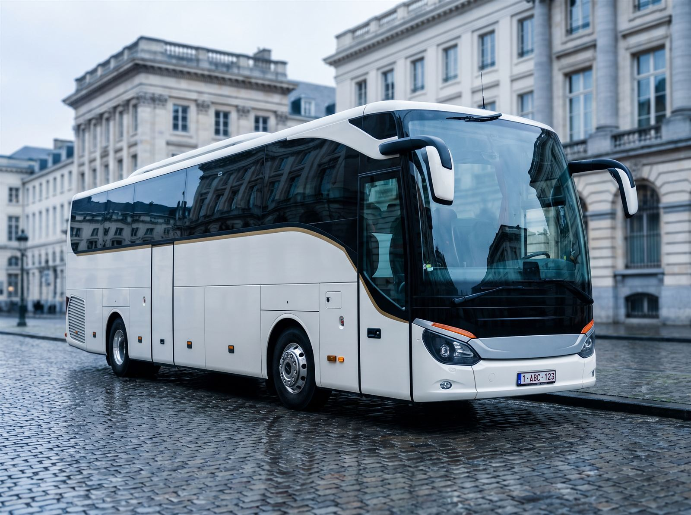

Chófer privado
Un chófer profesional a su disposición por horas, media jornada o día completo, en Bruselas y en cualquier punto de Bélgica.
Saber más
Bruselas · Bélgica
Viaje con elegancia, comodidad y seguridad por toda Bélgica.
Aurum — Limousine Bruxelles
Los chóferes con experiencia de Aurum le llevarán adonde necesite en limusina, minibús o autocar VIP: aeropuerto, boda, evento de empresa, traslado privado o transporte de grupos.
Desde Bruselas ponemos vehículos premium y chóferes profesionales al servicio de cualquier viaje por Bélgica. Tanto si viaja solo a una reunión de negocios, en familia para un vuelo a primera hora o con cincuenta personas rumbo a un congreso, tenemos el vehículo adecuado y a la persona adecuada al volante. Presupuestos en español y recogida en el aeropuerto de Bruselas para quienes llegan desde España y desde cualquier otro país.

La pregunta que más nos hacen
Las dos cosas, y bastante más. Aurum no se limita a un solo tipo de vehículo: ofrecemos distintas opciones según el número de pasajeros y el tipo de viaje. Limusina, coche con chófer, monovolumen, minibús y autocar. Cuéntenos su viaje y le recomendaremos el vehículo adecuado.
| Opción | Capacidad | Ideal para | Vehículo habitual |
|---|---|---|---|
| Limusina / berlina de lujo | 1 a 3 pasajeros | Traslados VIP, negocios, cenas de gala | Mercedes Clase S |
| Coche con chófer | 1 a 4 pasajeros | Viajes privados, alquiler por horas | Berlina premium |
| Monovolumen de lujo | Hasta 7 pasajeros | Familias, aeropuertos, grupos pequeños con equipaje | Mercedes Clase V |
| Minibús | Hasta 8 plazas | Grupos reducidos, reuniones, lanzaderas | Minibús premium |
| Autocar / autobús VIP | Unas 50 plazas | Excursiones, congresos, bodas, viajes de empresa | Autocar de turismo |
Nuestros servicios
Desde una recogida en el aeropuerto hasta el transporte completo de un grupo, una respuesta para cada viaje en Bruselas y Bélgica.
Un chófer profesional a su disposición por horas, media jornada o día completo, en Bruselas y en cualquier punto de Bélgica.
Saber másBerlinas y limusinas de lujo para viajes de negocios, recepciones y cualquier ocasión que merezca una llegada memorable.
Saber másZaventem, Charleroi, Lieja, Amberes, Lila o Ámsterdam: recepción con cartel, seguimiento del vuelo y ayuda con el equipaje.
Saber másUn coche para los novios y lanzaderas para los invitados: puntualidad y elegancia desde la mañana hasta el último baile.
Saber másDiscreción, confidencialidad y puntualidad absoluta para autoridades, delegaciones y clientes de alto perfil.
Saber másHasta 8 plazas para equipos, familias y grupos pequeños, con espacio de verdad para el equipaje.
Saber másUnas 50 plazas para grupos grandes: excursiones, congresos, traslados de empresa y viajes de larga distancia.
Saber másCongresos, convenciones, viajes de incentivo, conciertos y eventos deportivos: la logística de transporte coordinada de principio a fin.
Saber másNuestra flota
Cuatro familias de vehículos y un mismo estándar: estado impecable, confort real y un chófer profesional.

Nuestros monovolúmenes de lujo
El monovolumen de referencia para viajar en grupo sin renunciar al confort. Asientos individuales, mucho espacio para las piernas, interior premium y un maletero de verdad. Es el vehículo que más nos piden para traslados privados, aeropuertos y grupos pequeños.

Nuestro vehículo insignia
La berlina por excelencia del transporte de lujo. Casi silenciosa a cualquier velocidad, con asientos de piel, suspensión adaptativa y un acabado impecable: la Clase S convierte un simple trayecto en una hora de calma. Con un chófer de traje, es la elección natural para reuniones de negocios, cenas de gala y sus clientes más exigentes.

Minibús
El equilibrio justo entre la agilidad de un coche y la capacidad de un autocar. Nuestro minibús admite hasta 8 pasajeros y dispone de un maletero generoso: ideal para un equipo en una reunión fuera de la oficina, una familia numerosa o una lanzadera regular entre el hotel y el lugar del evento.

Autocar / autobús VIP
Para excursiones, congresos, eventos de empresa y viajes de larga distancia, nuestro autocar de unas 50 plazas ofrece asientos reclinables, climatización y bodegas amplias. Un solo vehículo para que todo el grupo viaje unido, a tiempo y seguro.

“Un buen chófer no se nota. Se agradece.”
Nuestros chóferes
Viaje con comodidad y seguridad de la mano de nuestros chóferes profesionales. Conocen Bruselas y Bélgica al detalle: qué arterias se colapsan y a qué hora, dónde están realmente las entradas de los hoteles, las zonas de recogida de los aeropuertos y qué rutas alternativas tomar los días de cumbre europea.
Tarifas orientativas
Los importes que aparecen a continuación son orientativos y dependen de su itinerario. El precio final varía según la duración, el número de pasajeros, la distancia y el recorrido exacto.
1 a 7 pasajeros
Bajo petición
Según recorrido y duración
Hasta 8 plazas
≈ 350 €
por día, orientativo
Unas 50 plazas
≈ 600 €
por día, orientativo
Conviene saber: cada viaje es distinto. El presupuesto se calcula a partir de la duración del alquiler, el número de pasajeros, los kilómetros y el recorrido exacto: solo ida, ida y vuelta o jornada completa. Sin sorpresas: el importe presupuestado es el que se factura. Todos los precios están en euros (EUR).
A bordo
Equipamos nuestros vehículos para que el trayecto cuente tanto como el destino.
Asientos de acabado cuidado, a menudo de piel, pensados tanto para viajes largos como para traslados cortos.
Siga conectado: trabaje, responda al correo o navegue mientras otra persona conduce.
Viaja sentado, no apretado. El espacio para las piernas es lo que de verdad se nota en carretera.
Iluminación ambiental, aislamiento acústico y suspensión suave: el trayecto pasa a ser la parte agradable.
Una flota reciente, limpia antes de cada servicio y revisada con regularidad.
La temperatura adecuada durante todo el año, regulable a su gusto.
Por qué elegirnos
Los chóferes con experiencia de Aurum le llevarán adonde necesite en limusina, minibús o autocar VIP: aeropuerto, boda, evento de empresa, traslado privado o transporte de grupos.
Mercedes Clase S y Clase V recientes, minibuses y autocares, mantenidos y impecables en cada salida.
Chóferes con experiencia, puntuales y discretos que conocen Bruselas y Bélgica.
Conducción suave, vehículos revisados y cumplimiento estricto de las normas: llegará tranquilo y a tiempo.
Bruselas, Amberes, Gante, Brujas, Lieja, Namur, Charleroi y, bajo petición, los países vecinos.
Desde un traslado privado puntual hasta un contrato regular de lanzaderas para empresa, con facturación clara.
Desde un solo pasajero en un Clase S hasta unas cincuenta personas en un mismo autocar.

Dónde trabajamos
Nuestra base es Bruselas y nuestro territorio, Bélgica. Conocemos los accesos al Barrio Europeo, los hoteles del centro, los recintos feriales y las zonas de recogida de los aeropuertos.
Preguntas frecuentes
Contacto
Cuéntenos su viaje: le responderemos con una propuesta clara y el vehículo que mejor se adapte a su grupo.

Aurum — Limousine Bruxelles
Envíenos la fecha, el recorrido y el número de pasajeros. De lo demás nos encargamos nosotros.